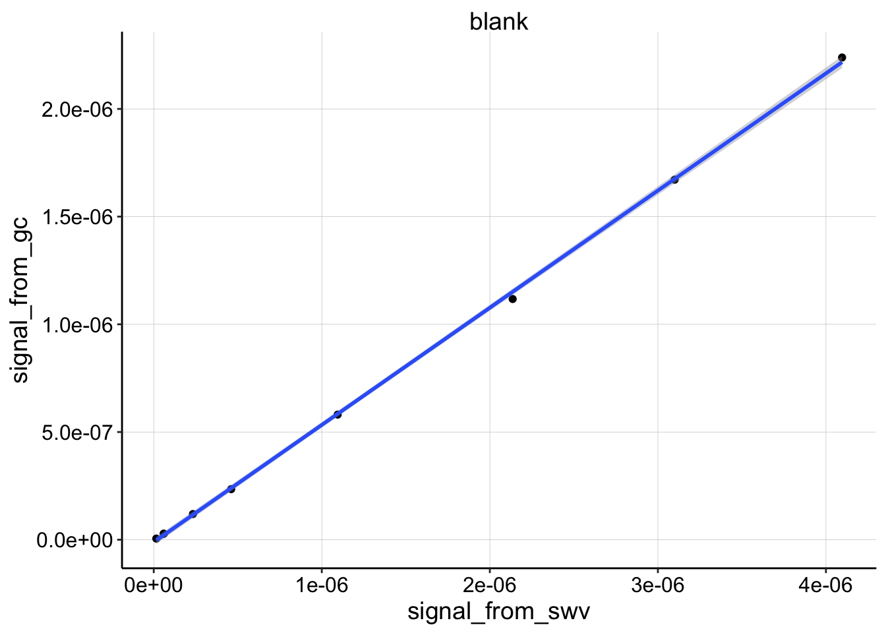
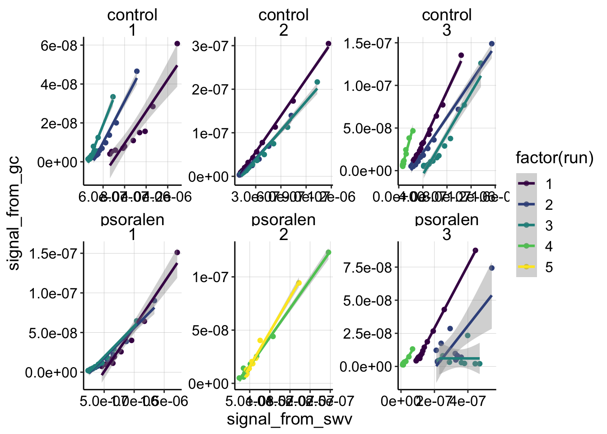
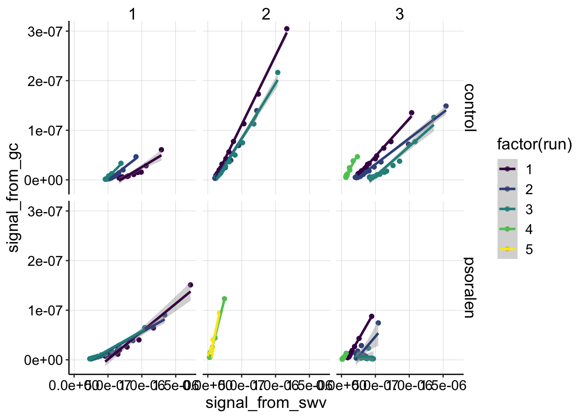
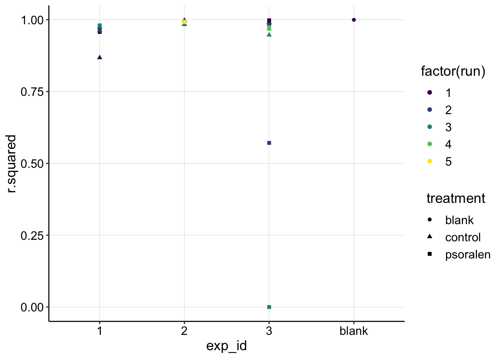
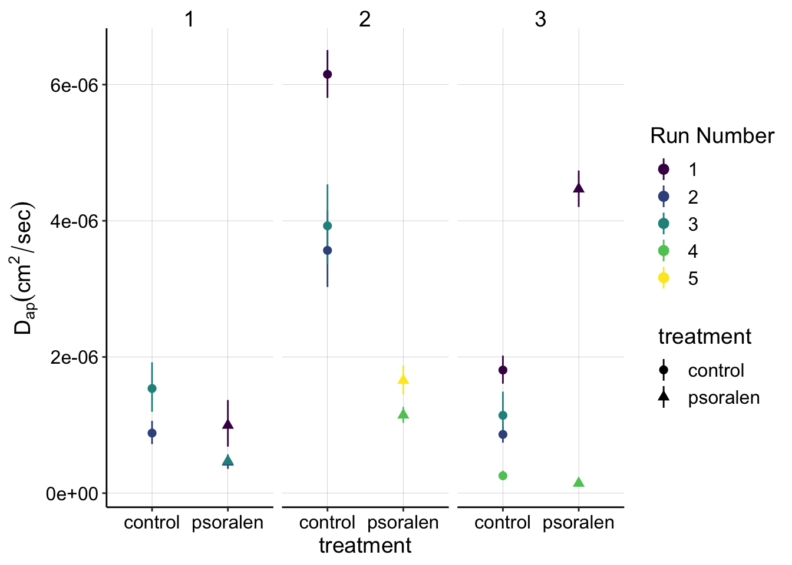
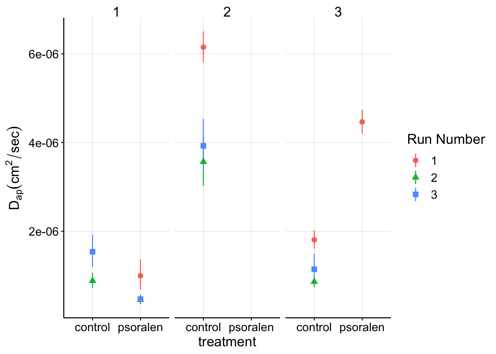
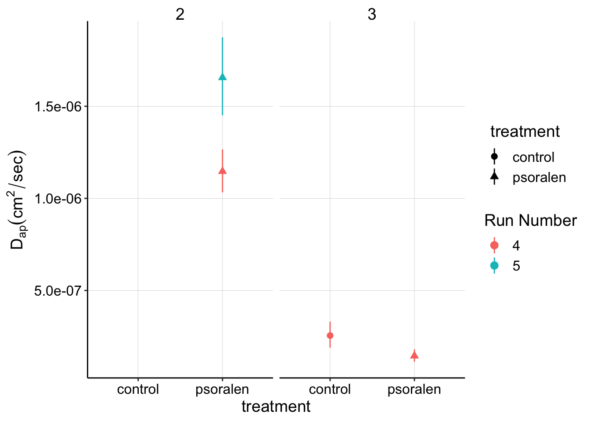
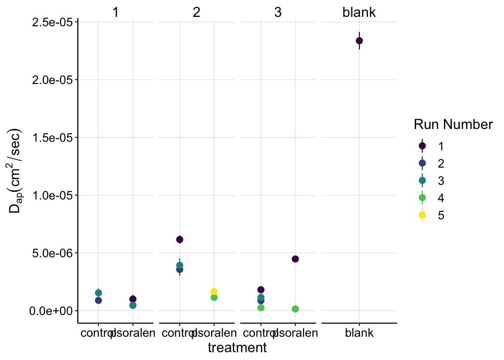

library(tidyverse)
library(cowplot)
library(broom)
library(modelr)
library(viridis)
library(lubridate)
library(hms)
knitr::opts_chunk$set(tidy.opts=list(width.cutoff=60),tidy=TRUE, echo = TRUE, message=FALSE, warning=FALSE, fig.align="center")
source("../../tools/echem_processing_tools.R")
source("../../tools/plotting_tools.R")
theme_set(theme_1())Now that three replicates of the nonequilibrium psoralen experiment have been completed, let’s combine the datasets to get a feel for what the experiments can broadly tell us. The primary goal was to test whether psoralen (trioxsalen) treatment had an effect on measured \(D_{ap}\) on the IDA biofilms. The secondary goal was to get a set of controls that either way would allow us to confidently estimate \(D_{ap}\) for a normal biofilm.
I will also compare the biofilm datasets to a ‘blank’ dataset to give us some perspective.
I’m using processed datasets from the three psoralen nonequil experiments (01/08/19, 01/17/19, and 01/23/19), as well as the blank dataset from (11/28/18).
Please look back at those notebooks/datasets for more info about the raw data and acquisition parameters. I believe the acquisition parameters for all 4 datasets are nearly identical, except the scan window (voltage range) was changed a little, and accordingly the GC collector potential may be 0V instead of +0.1V for exeriments 3 and 4.
First let’s import the datasets and exclude some of the problematic points that were obvious from the past analyses.
df_blank <- read_csv("../../11_28_18_blank_IDA/Processing/11_28_18_swv_gc_soak_processed.csv") %>%
select(reactor,electrode_from_swv,signal_from_swv,electrode_from_gc, signal_from_gc,echem_from_swv ) %>%
mutate(run = 1, rep = 0, treatment='blank', exp_id = 'blank')
df_3 <- read_csv("../../01_23_19_psoralen_nonequil_3/Processing/01_23_19_processed_swv_gc_all.csv") %>%
select(treatment,run,rep,reactor,electrode_from_swv,signal_from_swv,electrode_from_gc, signal_from_gc, echem_from_swv ) %>%
mutate(exp_id = '3') %>%
filter(run!=1 | treatment!='psoralen' | rep<14 ) %>%
filter(run!=4 | treatment!='control' | rep>1 )
df_2_control <- read_csv("../../01_17_19_psoralen_nonequil_2/Processing/01_17_19_swv_gc_control_dap_processed.csv")
df_2_psoralen <- read_csv("../../01_17_19_psoralen_nonequil_2/Processing/01_17_19_swv_gc_psoralen_dap_processed.csv")
df_2 <- rbind(df_2_control,df_2_psoralen) %>%
select(treatment,run, rep, reactor,electrode_from_swv,signal_from_swv,electrode_from_gc, signal_from_gc, echem_from_swv ) %>%
mutate(exp_id = '2')
df_1 <- read_csv("../../01_08_19_psoralen_nonequil/Processing/01_08_19_processed_swv_gc_signals.csv") %>%
select(treatment,run, rep, reactor,electrode_from_swv,signal_from_swv,electrode_from_gc, signal_from_gc , echem_from_swv) %>%
mutate(exp_id = "1")
df_all <- rbind(df_1,df_2,df_3,df_blank)First, let’s look at the blank dataset.
ggplot(df_all %>% filter(electrode_from_swv=='i1' & electrode_from_gc=='i2' & treatment=='blank'),
aes(x = signal_from_swv, y = signal_from_gc)) +
geom_point() +
geom_smooth(method='lm')+
facet_wrap(~exp_id)
You can see that the blank dataset is almost perfectly linear.
Now let’s look at all of the biofilm data. Below the data are broken down by experiment number and treatment. The colors represent each run within each experiment. The scales are free, so you can assess how well each dataset is fit by the linear model. Remember we are very interested to know whether the shape is linear or nonlinear.
ggplot(df_all %>% filter(electrode_from_swv=='i1' & electrode_from_gc=='i2' & treatment!='blank'),
aes(x = signal_from_swv, y = signal_from_gc, color = factor(run))) +
geom_point() +
geom_smooth(method='lm')+
facet_wrap(treatment~exp_id,scales='free')+
scale_color_viridis(discrete = T)
# ggplot(df_all %>%
# filter(electrode_from_swv=='i1' & electrode_from_gc=='i2') %>%
# filter(exp_id=='3' & run==4),
# aes(x = signal_from_swv, y = signal_from_gc, color = factor(run), shape = treatment)) +
# geom_point() +
# geom_smooth(method='lm') +
# facet_wrap(reactor~exp_id,scales='free')Overall, I think the data are fit pretty well by the linear models. There are definitely subsets that are not fit well, and we can break those into two categories: obviously bad data, and good data that doesn’t look linear. For experiment 3 psoralen treated biofilm, you can see that runs 2 and 3 do not look like nice monotonic trends. This is likely because the SWV scans were super weird for those runs - therefore we will ignore them later on. On the other hand, exp 1 run 1 for control and psoralen looks pretty clean, but they look quite nonlinear. There are several other runs in the dataset that look somewhat nonlinear, and it is interesting to think about what that might mean. For now though, let’s move forward with the assumption that most of the datasets can be reasonably fit with a linear model.
Given that we can fit with a linear model let’s now compare the slopes of the datasets, by looking at the same plot with fixed scales:
ggplot(df_all %>% filter(electrode_from_swv=='i1' & electrode_from_gc=='i2' & treatment!='blank'),
aes(x = signal_from_swv, y = signal_from_gc, color = factor(run))) +
geom_point() +
geom_smooth(method='lm')+
facet_grid(treatment~exp_id)+
scale_color_viridis(discrete = T) We can see some clear differences in slopes across the datasets. However, keep in mind that exp 2 psoralen and experiment 3 run 4 both conditions were taken with SWVslow settings that will increase the slope due to the different scan rate. Still, it’s clear that there’s a variety of slopes, but also that none of the slopes seem like crazy outliers.
Now, let’s grab the coefficients of those linear fits and calculate \(D_{ap}\) estimates using our known parameters.
Recall: \[ D_{ap} = \frac{(m A \psi)^2 }{S^2 \pi t_p }\]
Here’s our default \(D_{ap}\) calculator function to get from slope, \(m\), to our estimate.
dap_calc <- function(m, t_p=1/(2*300)){
psi <- 0.91
A <- 0.013 #cm^2
S <- 18.4 #cm
d_ap <- (m*A*psi)^2 / (S^2 * pi * t_p)
d_ap
}Now, we’ll fit all the subsets of data and grab metrics like \(R^2\) and confidence intervals for the slope coefficient. Let’s go ahead and plot all of the \(R^2\) values for the datasets to quantitatively assess the fits.
swv_gc_all <- df_all %>%
filter(electrode_from_swv=='i1' & electrode_from_gc=='i2' ) %>%
group_by(treatment,exp_id,run,echem_from_swv) %>%
do(fit = lm(signal_from_gc~signal_from_swv,data = .))
swv_gc_fit_tidy <- tidy(swv_gc_all,fit,conf.int=T)
swv_gc_fit_glance <- glance(swv_gc_all,fit) %>%
select(treatment,exp_id,run,r.squared,adj.r.squared)
swv_gc_fit <- left_join(swv_gc_fit_tidy %>% filter(term=='signal_from_swv'), swv_gc_fit_glance, by = c('treatment','exp_id','run','echem_from_swv'))
ggplot(swv_gc_fit, aes(x = exp_id, y = r.squared, shape=treatment,color = factor(run)))+
geom_point()+
scale_color_viridis(discrete = T) You can see that all of the datasets have very high \(R^2\) values (1 is a perfect line), except for the problematic subsets we identified earlier (exp 3, psoralen, runs 2-3), and a very nonlinear subset (exp 1 control run 1)
Let’s move forward calculating \(D_{ap}\), but we’ll exclude all the models with \(R^2 < 0.9\). First calculate \(D_{ap}\) for all the data that was acquired with SWV fast settings, which has a pulse time of \(t_p=1/600\)
(swv_gc_dap <- swv_gc_fit %>%
filter(r.squared>0.9) %>%
filter(echem_from_swv=='SWV' | echem_from_swv == 'SWV.txt') %>%
mutate(dap=dap_calc(m = estimate)) %>%
mutate(dap_high = dap_calc(m = conf.high)) %>%
mutate(dap_low = dap_calc(m = conf.low))
)## # A tibble: 13 x 16
## # Groups: treatment, exp_id, run, echem_from_swv [13]
## treatment exp_id run echem_from_swv term estimate std.error statistic
## <chr> <chr> <dbl> <chr> <chr> <dbl> <dbl> <dbl>
## 1 blank blank 1 SWV.txt sign… 0.544 0.00372 146.
## 2 control 1 2 SWV sign… 0.106 0.00474 22.3
## 3 control 1 3 SWV sign… 0.140 0.00763 18.3
## 4 control 2 1 SWV sign… 0.279 0.00369 75.7
## 5 control 2 2 SWV sign… 0.213 0.00773 27.5
## 6 control 2 3 SWV sign… 0.223 0.00772 28.9
## 7 control 3 1 SWV sign… 0.151 0.00399 38.0
## 8 control 3 2 SWV sign… 0.105 0.00349 30.0
## 9 control 3 3 SWV sign… 0.120 0.00790 15.2
## 10 psoralen 1 1 SWV sign… 0.112 0.00837 13.4
## 11 psoralen 1 2 SWV sign… 0.0760 0.00409 18.6
## 12 psoralen 1 3 SWV sign… 0.0772 0.00273 28.3
## 13 psoralen 3 1 SWV sign… 0.238 0.00324 73.5
## # … with 8 more variables: p.value <dbl>, conf.low <dbl>, conf.high <dbl>,
## # r.squared <dbl>, adj.r.squared <dbl>, dap <dbl>, dap_high <dbl>,
## # dap_low <dbl>And now we’ll separately calcualte \(D_{ap}\) for the SWV slow subsets, with \(t_p = 1/30\).
(swvSlow_gc_dap <- swv_gc_fit %>%
filter(r.squared>0.9) %>%
filter(echem_from_swv=='SWVslow') %>%
mutate(dap=dap_calc(m = estimate,t_p= (1 / 30))) %>%
mutate(dap_high = dap_calc(m = conf.high,t_p= (1 / 30))) %>%
mutate(dap_low = dap_calc(m = conf.low,t_p= (1 / 30)))
)## # A tibble: 4 x 16
## # Groups: treatment, exp_id, run, echem_from_swv [4]
## treatment exp_id run echem_from_swv term estimate std.error statistic
## <chr> <chr> <dbl> <chr> <chr> <dbl> <dbl> <dbl>
## 1 control 3 4 SWVslow sign… 0.254 0.0156 16.3
## 2 psoralen 2 4 SWVslow sign… 0.539 0.0125 43.2
## 3 psoralen 2 5 SWVslow sign… 0.648 0.0186 34.8
## 4 psoralen 3 4 SWVslow sign… 0.191 0.00999 19.2
## # … with 8 more variables: p.value <dbl>, conf.low <dbl>, conf.high <dbl>,
## # r.squared <dbl>, adj.r.squared <dbl>, dap <dbl>, dap_high <dbl>,
## # dap_low <dbl>Now let’s combine all of the \(D_{ap}\) estimates and plot them. First, let’s look at our primary question, which was whether or not psoralen treatment affects \(D_{ap}\).
swv_gc_dap_estimates <- rbind(swv_gc_dap, swvSlow_gc_dap)
ggplot(swv_gc_dap_estimates %>% filter(treatment!='blank'),
aes(x = treatment, y = dap, shape = factor(run), color = factor(run))) +
geom_point() +
geom_pointrange(aes(ymin = dap_low, ymax = dap_high))+
facet_wrap(~exp_id) +
scale_color_viridis(discrete = T)+
labs(y=expression(D[ap] (cm^2 / sec)),color='Run Number',shape='Run Number') 
ggplot(swv_gc_dap %>% filter(treatment!='blank'),
aes(x = treatment, y = dap, shape = factor(run), color = factor(run))) +
geom_point() +
geom_pointrange(aes(ymin = dap_low, ymax = dap_high))+
facet_wrap(~exp_id) +
labs(y=expression(D[ap] (cm^2 / sec)),color='Run Number',shape='Run Number') 
ggplot(swvSlow_gc_dap %>% filter(treatment!='blank'),
aes(x = treatment, y = dap, shape = factor(run), color = factor(run))) +
geom_point() +
geom_pointrange(aes(ymin = dap_low, ymax = dap_high))+
facet_wrap(~exp_id) +
labs(y=expression(D[ap] (cm^2 / sec)),color='Run Number',shape='Run Number') 
ggplot(swv_gc_dap_estimates, aes(x = treatment, y = dap, shape = factor(run), color = factor(run))) +
geom_point() +
geom_pointrange(aes(ymin = dap_low, ymax = dap_high))+
facet_grid(~exp_id,scales='free_x') +
scale_color_viridis(discrete = T)+
labs(y=expression(D[ap] (cm^2 / sec)),color='Run Number',shape='Run Number') 
# ggplot(swv_gc_dap_estimates %>% filter(treatment!='blank' & exp_id=='3'), aes(x = treatment, y = dap, color = factor(run),shape = factor(run))) +
# geom_point() +
# geom_pointrange(aes(ymin = dap_low, ymax = dap_high))+
# facet_wrap(~exp_id,scales = 'free')+
# scale_color_viridis(discrete = T)